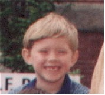

I'm 7 and am in first grade. I have two tigers - one is Hobbes, who used to be little, but he ate three elephants when he was on vacation. He's 6. The other is Hobbes Jr., his little brother. He's 5. I have an older brother, Kelsey Cullen, and a younger sister, Montana - we all have the same mommy, Carla Holley.
My favorite TV shows are Sabrina, Animaniacs, Theodore the Tug Boat, Men in Black, Winnie the Pooh, and Tintin.
I like to read a lot and help other kids learn to read.
I like to go on vacation in Santa Barbara, where almost all my dad's family has moved and I have twin cousins, Jenise and Leanne.
I also like the pirate song that's loading now ...
You can send me email at my dad's place.
My mom scanned a picture of my school class and turned it into a picture of me.
You can also see it in black and white if you want to print it, but don't have a color printer. If so, click here.
If you want to see the picture of my 1st Grade class that my mom scanned (2569KB) then click here.
My dad has an animated music page, and I like to dance to Sky Cries Mary, Fiona Apple, Diamond Fist Werny, and other things. But he always turns the music too loud in the car, when he's not listening to the news on KUOW.

{kind=link}
{kind=link}